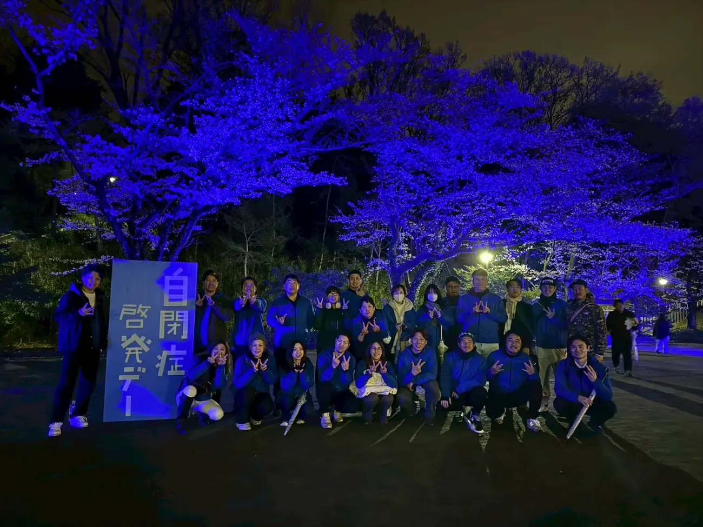
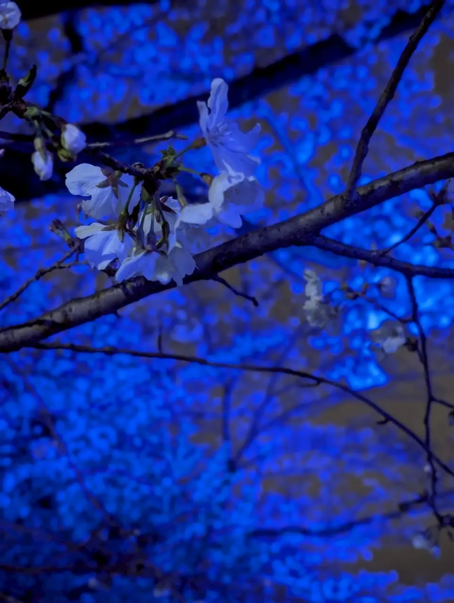
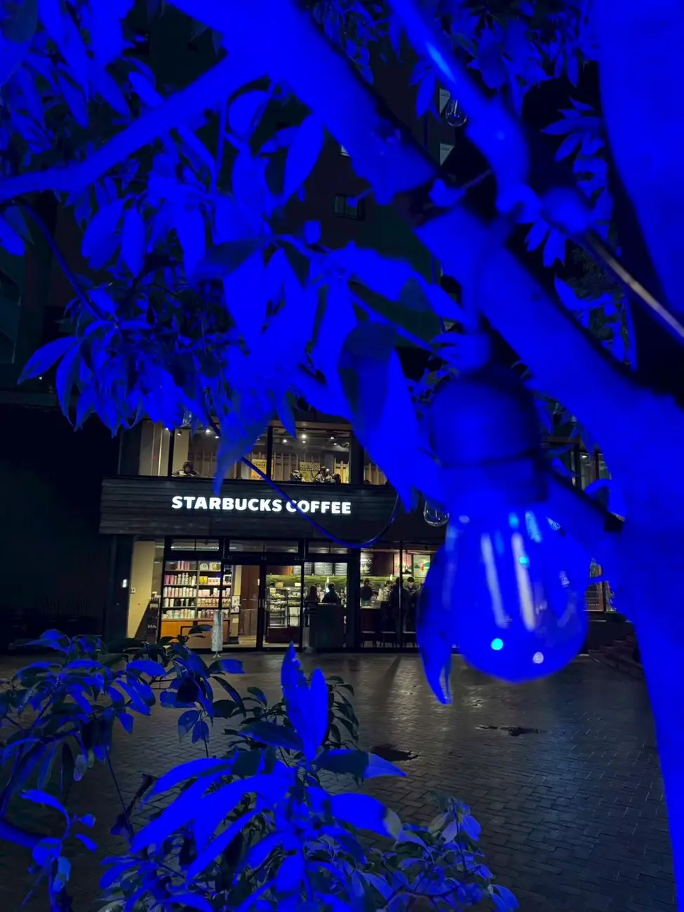
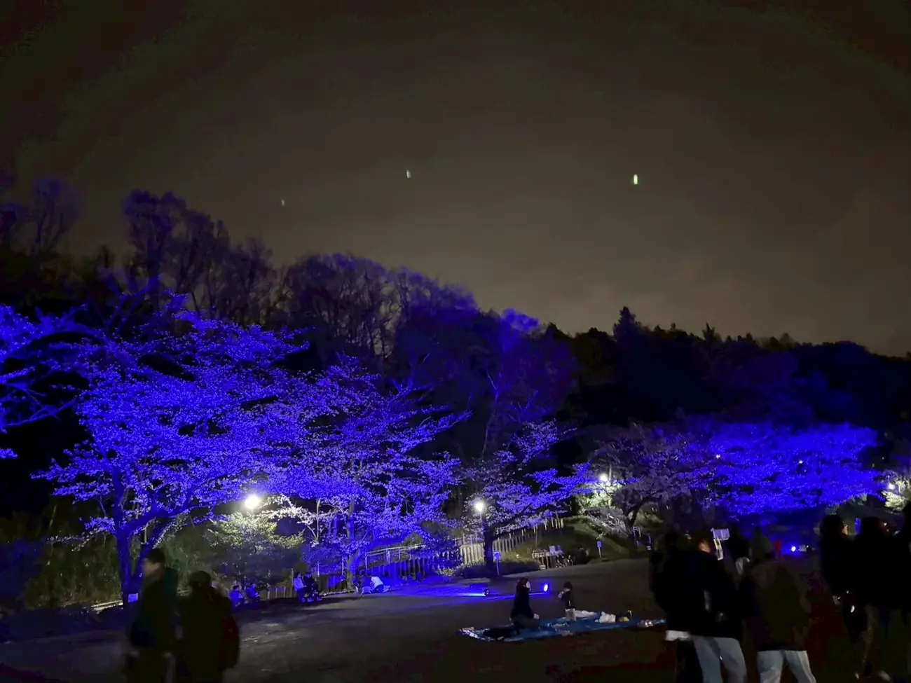
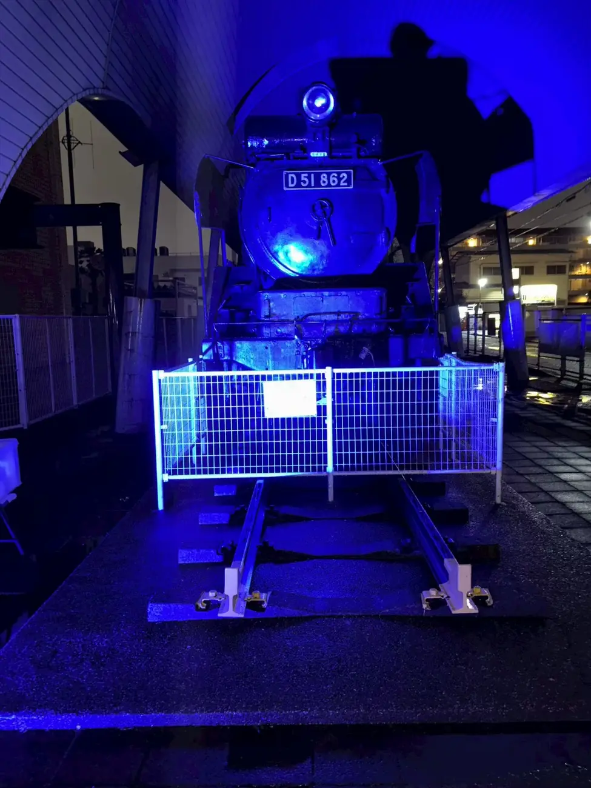
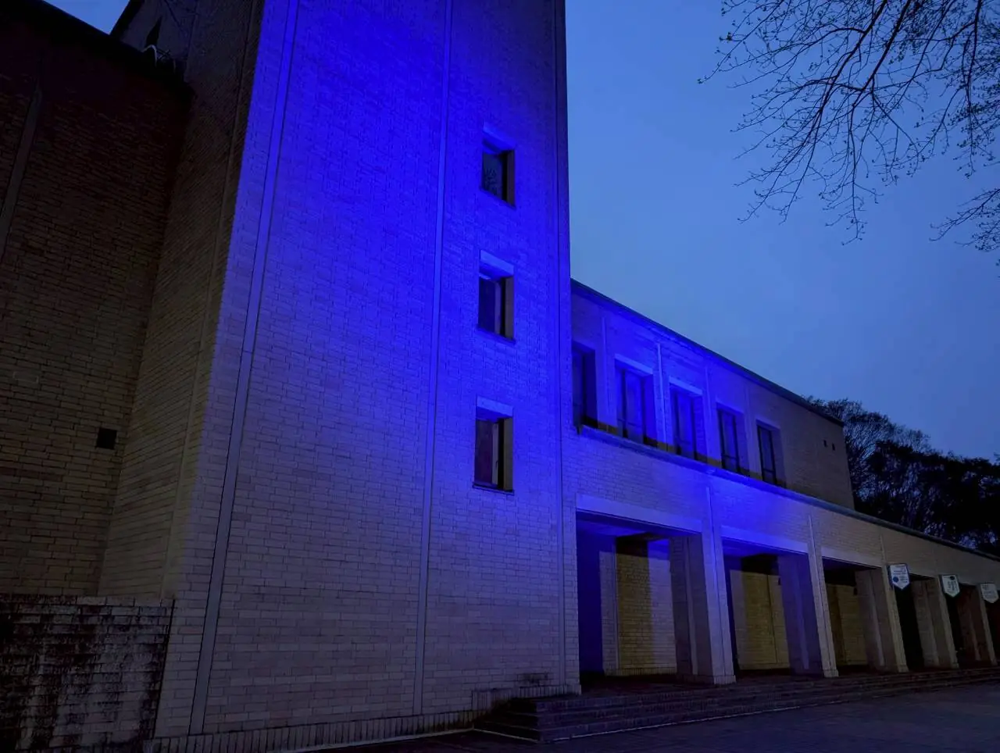

自閉症への理解を、
町田から。
私たちは、自閉症とその周辺の課題について、より多くの人に理解を深めてもらうことを目的に活動する「WARMBLUEmachida実行委員会」です。
2024年、町田市で初めて「WARMBLUEmachida2024」を実施し、多くの皆様からご支援と共感をいただきました。
これからも世界自閉症啓発デーに向けて、自閉症への理解を町田から広げる活動を続けていきます。


3つの光で、
街を照らす。
街をブルーに
ライトアップする
世界自閉症啓発デーに合わせて、町田市内の公共施設・商業施設・街路を青い光で彩ります。街の景色が変わることで、自閉症について考えるきっかけを生み出します。
夜空に青い花火を
打ち上げる
芹ケ谷公園から打ち上げる青い花火は、WARMBLUEmachidaのシンボル。障害のある人もない人も、同じ空を見上げて同じ時間を共有します。
知る・考える
機会をつくる
マルシェやお祭りでの募金活動・啓発イベントを通じて、自閉症への理解を広げます。企業・施設・店舗・団体・地域の皆様との連携を進めています。
光は、
少しずつ広がっている。
WARMBLUEmachida2024では、町田市内の商業施設や店舗の皆様にご協力いただき、街のさまざまな場所をブルーにライトアップしました。募金活動や啓発イベントを通じて、多くの方に活動を知っていただくことができました。現在も、企業、施設、店舗、団体、地域の皆様との新しい連携を進めています。

COLLABORATION店舗の皆様のご協力による、まちなかのブルーイルミネーション

SERIGAYA PARK青い桜の下で。障害のある人もない人も、同じ景色を楽しむ時間

LIGHT UPまちのシンボルも、ブルーの光に包まれて

MUSEUM夕暮れの国際版画美術館に灯る、やわらかなブルー